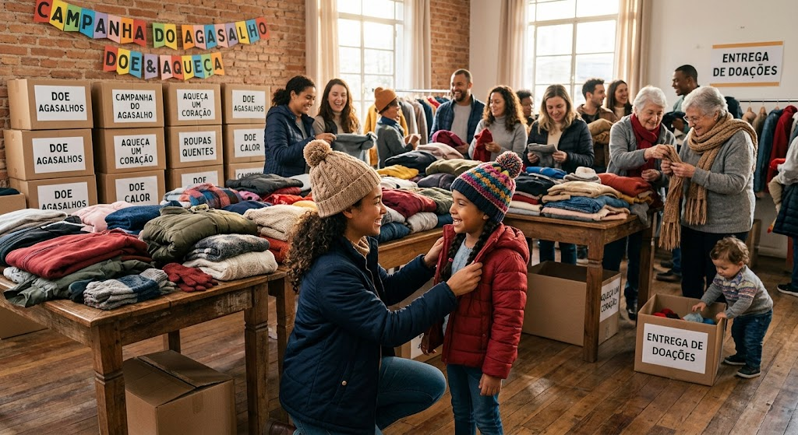

Arrecadação
Campanhas para arrecadar alimentos, roupas e outros itens.
A ONG Mãos que Ajudam trabalha para transformar vidas por meio da solidariedade, voluntariado e ações sociais.
Seja voluntário
A ONG Mãos que Ajudam reúne pessoas dispostas a contribuir com projetos sociais e ações comunitárias.
Campanhas para arrecadar alimentos, roupas e outros itens.
Pessoas podem participar das nossas ações e projetos sociais.
Projetos voltados para ajudar pessoas em situação de vulnerabilidade.
Quer fazer parte dessa iniciativa? Cadastre-se para conhecer nossas ações.
Fazer cadastroA ONG Mãos que Ajudam desenvolve projetos voltados para solidariedade, voluntariado e apoio à comunidade.
Você também pode participar dessas ações realizando seu cadastro como voluntário.
Quero participar